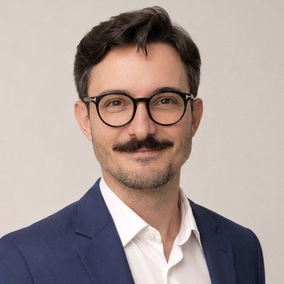

23 publicações pensadas pra crescer seguidores e consultas: imagens editoriais e antes/depois em vídeo e foto, em rodízio, com a identidade nova. Cada card mostra a legenda como fica no Instagram. Toque em Aprovar ou Quer editar. Veja o perfil montado em Grade e o que foi decidido em Resumo. Cada escolha chega na hora para a Letícia — não precisa salvar nem enviar nada.
Assuntos para você gravar com o celular, falando com a câmera. Cada pauta tem o gancho (a primeira frase), os pontos a falar e quando entra no calendário. Marque Vou gravar ou Quer mudar — a escolha chega para a Letícia na hora.
Como o perfil fica com os 23 posts na ordem do cronograma — ritmo de formatos e assuntos.

Só o aprovado e o que ele quer editar, com as notas. Use Copiar resumo e cole no WhatsApp.
Cada aprovação, pedido de edição e nota aparece aqui na hora, do mais recente para o mais antigo.